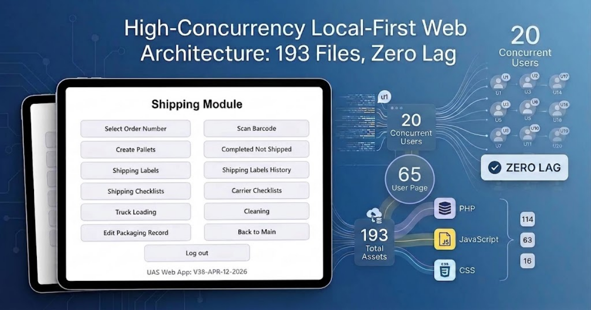

High-Concurrency Local-First Web Architecture: 193 Files, Zero Lag
When enterprise web apps grow, database queries slow down, interfaces lag, and workers in fast-paced environments end up waiting on spinning loaders.
Starting in September 2023, I built UAS Central—a local-first platform designed to unify complex facility operations into a high-performance system for operations of: inland inventory, packaging, truck loading, shipping, warehouse management, and cleaning of mixture machines.

Despite managing 193 assets and supporting 20 concurrent users entering data at peak times, the application operates with zero speed bottlenecks.
Why Local-First Matters
Traditional web apps send every button click across the internet to a distant server. A local-first approach changes the dynamic:
Instant Response: Navigation and data entry update instantly on the user's device, bypassing network latency.
Background Syncing: Updates sync cleanly without locking the UI.
Operational Resilience: If warehouse Wi-Fi drops, work continues uninterrupted and syncs automatically when reconnected.
Scalability Without Bloat
Separating background routines (procs), notifications, and domain modules into isolated files prevents memory bloat, delivering desktop-like speed inside a browser.
Looking for expert architecture guidance? DataCore Systems specializes in enterprise database migrations, offline-first web applications, and SQL Server backend modernization.
Get in Touch